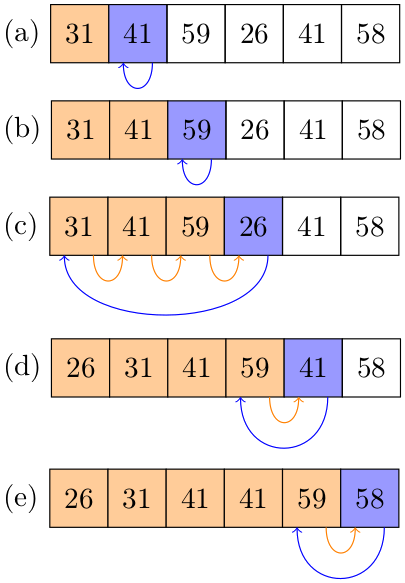

2.1 Insertion sort
Contents
2.1 Insertion sort#
We start by implementing and testing INSERTION-SORT. For simplicity, we apply it to integer arrays.
/*
Headers only needed for tests
*/
#include <stdio.h>
#include <time.h>
void insertion_sort(int *A, size_t n) {
// Insertion sort on an integer array of length n
int i,j; // Indices
int key;
for (j = 1; j < n; j++) {
key = A[j];
i = j - 1;
while (i >= 0 && A[i] > key) {
A[i + 1] = A[i];
i--;
}
A[i + 1] = key;
}
}
// Test code below
int main() {
int i; // Index
int n=10; // Test size
srand(time(NULL));
// Dinamically allocate random integer array
int * A = malloc(n*sizeof(int));
for (i=0;i<n;i++) {
A[i] = rand()%21 - 10;
}
printf("Array created:\n ");
for (i=0;i<n-1;i++) {
printf("%d, ",A[i]);
}
printf("%d.\n\n",A[i]);
insertion_sort( A , n );
printf("Ordered array:\n ");
for (i=0;i<n-1;i++) {
printf("%d, ",A[i]);
}
printf("%d.\n",A[i]);
free(A);
return 0;
}
Array created:
5, 5, 1, -6, -10, -1, 1, 4, 7, -8.
Ordered array:
-10, -8, -6, -1, 1, 1, 4, 5, 5, 7.
2.1-1#
Using Figure 2.2 as a model, illustrate the operation of
INSERTION-SORTon an array initially containing the sequence \(\langle 31,41,59,26,41,58\rangle\).

The image above was made with the TikZ code available in file 2.1-1_tikz.
2.1-2#
Consider the procedure
SUM-ARRAYon the facing page. It computes the sum of the \(n\) numbers in array \(A[1:n]\). State a loop invariant for this procedure, and use its initialization, maintenance, and termination properties to show that theSUM-ARRAYprocedure returns the sum of the numbers in \(A[1:n]\).SUM-ARRAY(A,n) 1 sum=0 2 for i=1 to n 3 sum = sum + A[i] 4 return sum
Loop invariant: At the start of the \(i\)-th iteration,
sumstores the sum of the elements of \(A[1:i-1]\)Initialization: Trivial (vacuous) for \(i=1\).
Maintenance: Suppose the invariant was true before the \(i\)-th iteration. This means that in line 2
sumstores the sum of the elements in \(A[1:i-1]\). In line 3, the value \(A[i]\) is added tosum, so now it stores the sum of the elements in \(A[1:i]\), i.e., of the elements in \(A[1:(i+1)-1]\). After line 3 the loop goes to the next iteration, so incrementing \(i\) for the next iteration of the loop preserves the loop invariant.Termination: The loop terminates when \(i=n+1\). Substituting this value in the loop invariant, we obtain that
sumstores the sum of the elements of \(A[1:n]\), and this is the value that the algorithm returns (as per line 4.).
2.1-3#
Rewrite the
INSERTION-SORTprocedure to sort into monotonically decreasing instead of monotonically increasing order.
Simply substitute “\(A[i]>\mathrm{key}\)” by “\(A[i]<\mathrm{key}\)” in line 5. of the procedure (p. 19). C implementation below.
/*
Headers only needed for tests
*/
#include <stdio.h>
#include <time.h>
void insertion_sort_reversed(int *A, size_t n) {
int i,j; // Indices
int key;
for (j = 1; j < n; j++) {
key = A[j];
i = j - 1;
while (i >= 0 && A[i] < key) {
A[i + 1] = A[i];
i--;
}
A[i + 1] = key;
}
}
// Test code below
int main() {
int i; // Index
int n=10; // Test size
srand(time(NULL));
// Dinamically allocate random integer array
int * A = malloc(n*sizeof(int));
for (i=0;i<n;i++) {
A[i] = rand()%21 - 10;
}
printf("Array created:\n ");
for (i=0;i<n-1;i++) {
printf("%d, ",A[i]);
}
printf("%d.\n\n",A[i]);
insertion_sort_reversed( A , n );
printf("Monotonically decreasing array:\n ");
for (i=0;i<n-1;i++) {
printf("%d, ",A[i]);
}
printf("%d.\n",A[i]);
free(A);
return 0;
}
Array created:
5, 5, 1, -6, -10, -1, 1, 4, 7, -8.
Monotonically decreasing array:
7, 5, 5, 4, 1, 1, -1, -6, -8, -10.
2.1-4#
Consider the searching problem:
Input: A sequence of \(n\) numbers \(A=\langle a_1,a_2,\ldots,a_n\rangle\) stored in array \(A[1:n]\) and a value \(x\).
Output: An index \(i\) such that \(x\) equals \(A[i]\) or the special value
NILif \(x\) does not appear in \(A\).Write pseudocode for
LINEAR SEARCH, which scans through the array from beginning to end, looking for \(x\). Using a loop invariant, prove that your algorithm is correct. Make sure that your loop invariant fulfills the three necessary properties.
LINEAR-SEARCH(A,n,x)
1 for j=1 to n
2 if x=A[j]
3 return j
4 return NIL
Loop invariant: At the start of the \(j\)-th iteration, \(x\) does not appear in \(A[1:(j-1)]\).
Initialization: Trivial (vacuous) for j=1.
Maintenance: Suppose the invariant was true at the start of the \(j\)-th iteration and that we are at the start of the \((j+1)\)-th iteration. This means that the procedure did not return during the \(j\)-th iteration, i.e., that the condition “\(x=A[j]\)” is not true. Thus \(x\) is not \(A[j]\), nor does it appear in \(A[1:(j-1)]\) (by hypothesis), so it does not appear in \(A[1:j]=A[1:((j+1)-1)]\), as desired (the loop invariant at step \(j+1\)).
Termination: The loop terminates under two possibilities:
1st: It returns a value during some iteration, which only happens if “\(x=A[j]\)” evaluates to
Truefor some \(j\). In this case, “\(x=A[j']\)” does not evaluate toTruefor any \(j'<j\). So, in this case, the process actually returns the first index \(j\) for which \(x=A[j]\) (and not just any such index). This is the desired output for our algorithm.2nd: \(j\) gets to \(n+1\). The loop invariant then tells us that \(x\) does not appear in \(A[1:n]\), and the process returns
NIL, which is also the desired output for our algorithm in this case.
C implementation below (we use “-1” instead of NIL).
/*
Headers only needed for tests
*/
#include <stdio.h>
#include <time.h>
int linear_search(int *A , int n , int x) {
/*
Using size_t for indexes and sizes is preferable, but since we want
-1 as a possible return, we use int instead.
An alternative would be to return the pointer to the entry instead
of the entry number, which allows for NULL.
*/
int j; // Index
for (j = 0; j < n; j++) {
if (x==A[j]) {
return j;
}
}
return -1;
}
// Test code below
int main() {
srand(time(NULL));
int i,index; // Index
int n=10; // Test size
int x = rand()%10; // key
// Dinamically allocate random integer array
int * A = malloc(n*sizeof(int));
for (i=0;i<n;i++) {
A[i] = rand()%11 - 5;
}
printf("Array created:\n ");
for (i=0;i<n-1;i++) {
printf("%d, ",A[i]);
}
printf("%d.\n\n",A[i]);
printf("Key: %d\n\n",x);
index = linear_search(A,n,x);
if (index==-1) {
printf("The key was not found.\n");
return 0;
}
printf("The key was found at index %d.\n" , index);
free(A);
return 0;
}
Array created:
3, 1, 1, -5, 5, 1, 2, 3, -1, -4.
Key: 5
The key was found at index 4.
2.1-5#
Consider the problem of adding two \(n\)-bit binary integers \(a\) and \(b\), stored in two \(n\)-element arrays \(A[0:n-1]\) and \(B[0:n-1]\), where each element is either \(0\) or \(1\), \(a=\sum_{i=0}^{n-1}A[i]\cdot 2^i\), and \(b=\sum_{i=0}^{n-1}B[i]\cdot 2^i\). The sum \(c=a+b\) of the two integers should be stored in binary form in an \((n+1)\)-element array \(C[0:n]\), where \(c=\sum_{i=0}^n C[i]\cdot 2^i\). Write a procedure
ADD-BINARY-INTEGERSthat takes as input arrays \(A\) and \(B\), along with the length \(n\), and returns array \(C\) holding the sum.
We do standard addition with carrying (which takes time \(O(n)=O(\lg a)\)), or we can use the recursive definition of addition, as “\(a+b)=(a+(b-1))+1\)” (which takes time \(O(a)\)). Let us implement the former.
ADD-BINARY-INTEGERS(A,B,n)
1. Initialize C[0:n]
2. carry = 0
3. for i=0 to n-1
4. // We have to sum A[i]+B[i]+carry and update the carry. We can do it without addition
5. if A[i]=B[i] // A[i]+B[i] = 00 or 01 (little-endian); either way, C[i]=carry
6. C[i]=carry
7. // if A[i]=1, the result was 01, so carry = 1. Otherwise, carry = 0
8. carry = A[i]
9. else // A[i] and B[i] are different: one is 0; other is 1
10. if carry=1 //A[i]+B[i]+carry=01
11. C[i]=0
12. // carry=1, no need to update
13. else // A[i]+B[i]+carry=10
14. C[i]=1
15. // carry=0, no need to update
16. C[n]=carry
Implementation below.
#include <stdio.h>
#include <time.h>
void add_binary_integers(int *A, int *B, int *C, int n) {
int carry = 0;
for (int i = 0; i < n; i++) {
if (A[i] == B[i]) { // result will be 00 or 01 (little-endian); either way
// C[i]=carry
C[i] = carry;
if (A[i] == 1) { // result was 01
carry = 1;
} else {
carry = 0;
}
} else { // A[i] and B[i] are different: one is 0; other is 1
if (carry == 1) { // A[i]+B[i]+along=01
C[i] = 0;
} else { // A[i]+B[i]+along=10
C[i] = 1;
}
// along=0, no need to update
}
}
C[n] = carry;
return;
}
int main() {
srand(time(NULL));
int n = 10;
// Initialize two n-sized 0-1 strings and their sum.
int A[n], B[n], C[n + 1];
for (int i = 0; i < n; i++) {
A[i] = rand() % 2;
B[i] = rand() % 2;
}
add_binary_integers(A,B,C,n);
// Print the sum
printf("Testing the sum. Note that numbers are written little endian, with carry to the right.\n");
printf(" ");
for (int i = 0; i < n; i++) {
printf("%d", A[i]);
}
printf("\n+");
for (int i = 0; i < n; i++) {
printf("%d", B[i]);
}
printf("\n ");
for (int i = 0; i < n + 1; i++) {
printf("_");
}
printf("\n ");
for (int i = 0; i < n + 1; i++) {
printf("%d", C[i]);
}
printf("\n");
return 0;
}
Testing the sum. Note that numbers are written little endian, with carry to the right.
1101110000
+1010101110
___________
00001000010